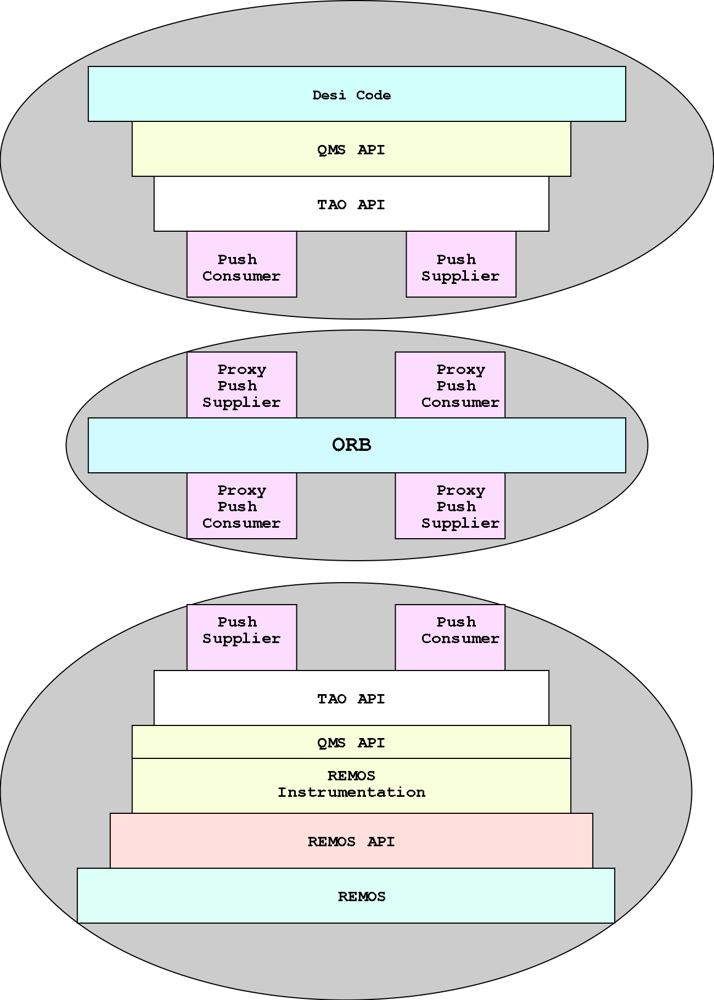

Design Document: QMS support for Desi Remos
interaction
Desi Remos interaction diagram

A flow sequence of the scenario is sketched out below. It should
be noted that QMS presents a uniform (symmetrical) API to either
side of the transaction.
-
The client code (Desi or the Remos instrumentation)
instantiates a QMS_Api
Object. This also instantiates member
supplier and
consumer
objects. No connections to the event channel are established
yet.
-
The client code then initializes the new QMS_Api object,
feeding it the command line options, an ID number that
identifies the type of entity that we are (a Desi entity that
generates queries and consumes Remos data, or Remos
instrumentation that consumes queries and creates data events.
This causes the library to initialize and bind to the ORB,
POA, the event channel, and the scheduler; though no
connections to the event channel are established yet. The
following tasks are accomplished:
- ORB initialization.
- Getting a handle for the Portable Object Adapter
- Getting a handle for the POA manager, used later to
activate the servant for the consumer object
- Obtain a reference to the naming service. This is the
first connection made outside the process
- Obtain a handle for the real time scheduler, used later
by the consumer object
- Obtain a handle for the event channel
- All these handles are stashed, and passed along to the
consumer and supplier objects to be stashed there for later
use.
.
-
Next, the client code registers a call back with this newly
created object, providing a function that should be called
when the data arrives. On the Desi side, this call back
function needs to handle the data that shall be returned by
the Remos instrumentation, and the Remos instrumentation probe
needs to provide a function that can handle queries sent to
it. No connections to the event channel are established.
-
This call back function is passed to the consumer object
to be used later while establishing a connection with the
event channel
-
Then the client code calls a routine to connect the supplier
to the event channel. This is used on the Desi side to
establish the connection that shall send queries, and on the
Remos instrumentation side to send back the data gathered by
Remos. There are a number of steps the supplier object takes
at this point:
-
Set the scheduler information, including criticality and
importance of the events that shall be generated
-
Set up the QoS information for the supplier, including the
supplier ID, the type of events that shall be generated,
and the scheduler information from the previous step.
-
Get a supplier admin object from the event channel
-
Use this supplier admin to get a consumer proxy from the
event channel
-
Connect out push supplier object to this consumer proxy
-
The next step is to connect the consumer object to the event
channel. This requires that a call back method already be
registered, since the consumer needs to be able to handle the
events coming in from the event channel. There are a number
of steps the Consumer object takes
at this point:
-
Set the scheduler information, including criticality and
importance of the events that shall shall be recieved
-
Set up the QoS information for the consumer, including the
supplier ID, the type of events that shall be accepted,
and the scheduler information from the previous step. At
thsi point we add in all the event types we are interested
in listening to.
-
Get a consumer admin object from the event channel
-
Use this consumer admin to get a supplier proxy from the
event channel
-
This is where the behaviors of the Desi client and the Remos
instrumentation client diverge. The Desi client fires up a
thread that does the main task, and generates the queries and
subsequently dispatches them to the Remos instrumentation
-
The client applications then enter into an loop listening for
CORBA events. This is where the final task of connecting the
Consumer object to the event channel is done.
-
Now we are in business. The Desi code can now call thesend
method, and use the consumer proxy's push method to
send the data off.
-
The Remos instrumentation module then waits for an query event
on the event channel. When it recieves an event, it Constructs
the Remos query, and sends it to Remos. When data are
available from Remos, the instrumentation module pushes the
data out to the event channel
-
The push consumer interface of the Desi-QMS entity recieves
this data, and feeds it to the call back function that was
registered with QMS. No manipulation of the data is done; any
book keeping required would be the responsibility of the Desi
client code.
Please note that there is not necesarily a one to one
relationship between the query event and the data events; a
singel query may ask for a series of data events (perhaps
recurring series of data events)
Thankfully, since the network broker is not a C app, we shall
not have to bother with C bindings.
Desi Remos specific Add ons for QMS
Most of the abive discussion actually utilizes a data agnostic,
generic API, even though we used the Desi and Remos clients as
examples (any QMS client shall go through similar steps).
However, an add on utility class,
QMS_Remos_Msg, is provided to
help with the conversions back and forth between XML and the
data structures used in
the client code to encapsulate a Remos
Query and response. The way this works is:
- One creates a new QMS_Remos_Msg object
- One can then insert into it either
- A Remos Query struct
- A Remos result struct
- Well formed XML
-
Subsequently, one can extract from the message
- XML encoding of whatever was stuffed into the object
- Recreate the Query struct (if that is what was inserted
into the message object)
- Recreate the result struct ((if that is what was inserted
into the message object)
Data structs and Class Heirarchy
Most of this is implemented as these classes:
- An object encapsulating the
interface with the client code
- An object implementing a
push consumer interface with the event channel, and
- An object implementing a
push supplier interface for the event channel.
-
A object that provides XML
conversions to and from the data structs used by the client
code
The file Remos_Datastructs.h
contains the struct definitions used in this application.
{kind=link}